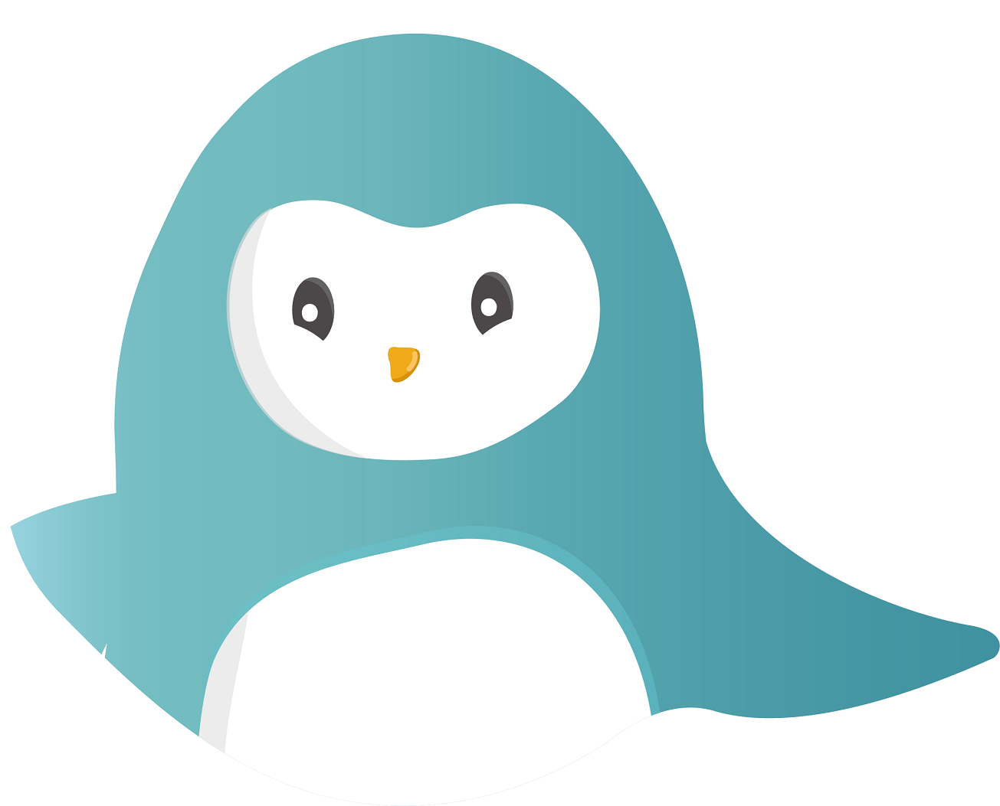

As a homage to Satoshi Nakamoto, the founder of Bitcoin, my supervisor wanted to create a chatbot that resembled him. Also, resources helped explain what bitcoin was, but there weren’t any interactive chatbots that allowed users to learn about it.
| Chatbots | Mitsuku |
Julie |
 Wysa |
Ben |
Akemi |
|---|---|---|---|---|---|
| Type of Bot | This is a conversational chatbot meant to be used as if she was a human. She has her own personality with personal preferences. | This is a conversational chatbot that is meant to be robot with some personality. It is not overly complex | This is a therapy chatbot that has a calm personality to help people on a day to day basis. This chatbot does not replace a therapist. | This chatbot that teaches users how to buy, sell and trade bitcoin. | This is a conversational chatbot that responds to anything the user types. It has its own tastes and preferences like the Mistuku chatbot. |
| Strengths |
|
|
|
|
|
| Weaknesses |
|
|
|
|
|
A portion of research was dedicated to understanding to understanding who Nakamoto was and how he engaged with users. I ended up creating a summary of all of the facts I found. I should note that I never made a persona for him. For my portfolio, I've made a persona for him based on the facts I collected from my internship.
I also had an opportunity to research different areas of psychology to understand how long it took a person to respond to a virtual message. For text messages, it takes about 90 seconds for a person to respond. Another consideration is the more complex a topic is, the more time it takes a user to respond. I also learned that people expected faster responses from text messages rather than emails and voicemails. Also, at least 1/5 of users expected people to respond to Twitter messages in less than 15 minutes. This indicates that some people want their messages immediately.
My supervisor decided that the chatbot would quiz users. Users would be tested on their knowledge of Bitcoin. If they passed the quiz, they would get a special prize. We did this to help teach users about Bitcoin while challenging more knowledgeable Bitcoin users on their skillset.
The questions started at a beginner’s level to help introduce the topic of Bitcoin to newbies and to help people get their feet wet. From there, the questions became more difficult. There were three levels a person had to go through to win a prize. The prize was an incentive for passing all of the tasks. Throughout the quiz, the chatbot was designed to be suspicious of everybody. Nakamoto would slowly open up to users as they begun to get more questions correct. However, the more questions a user got wrong, the more suspicious Nakamoto became. A user flow diagram was created to help show how users would interact with the chatbot. The diagram is posted below.
Throughout the design process, I focused on was making sure he was as human as possible. By highlighting his suspicious and secretive nature, it brought out Nakamoto's humanity. Also, my supervisor and I decided to create question bank where users could ask the chatbot personal questions. This section was created if users failed the chatbot’s quiz. After seeing other chatbots engage with users on a personal level, I wanted to continue this trend with the question bank. Also, I timed the chatbot’s responses so that it would look like he was taking time to type out his responses.
The chatbot was created using an online platform called Chatfuel. It allows a person to create a chatbot and users can respond to the chatbot by selecting from a series of options. Keywords or questions can be added in data bank so that when users talk to the chatbot, the responses could be more personalized.
I tested my design on three of my colleagues. All of my colleagues were interns who had very little to no knowledge about Bitcoin. The Bitcoin founder was tested for two criteria: how interactive he was and how human-like he was
While I was not a user researcher or designer for this project, there were parts of both that came into play. For example, I had to research Nakamoto’s personality and I created a mental persona of him that was very similar to a user persona. Also, I was able to test the bot on three people. Usually, user testing involves at least five people. Since my user testers were colleagues, their responses might be biased. Also, all of the users had very little to no knowledge about Bitcoin. I never had an opportunity to test the chatbot on somebody who knew a lot about Bitcoin.
Overall, developing the chatbot taught me how to understand a person’s personality/persona and how to replicate it. It was also the first time that I was able to test a product on a series of people. The actual next step would be to conduct user research on the chatbot. User research would involve having users go through the chatbot and asking users how they feel about different parts of the chatbot. To test the chatbot yourself, please click on the button below. Make sure you have a Facebook account to access the chatbot.